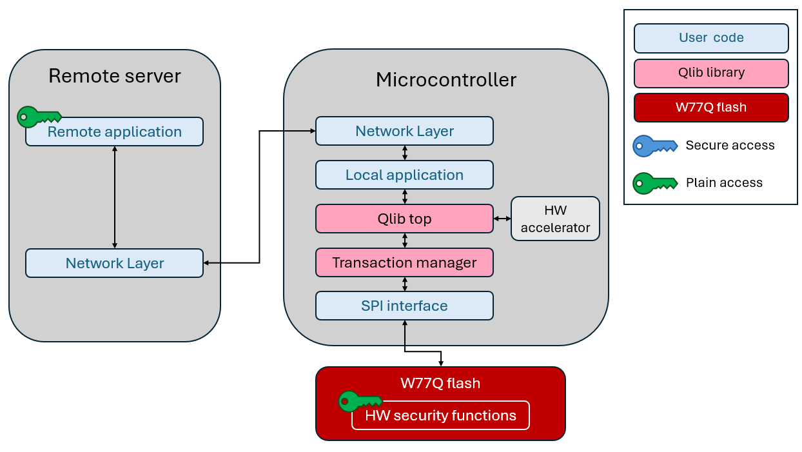

|
QLIB Library User-Guide
|
|
|
QLIB Library User-Guide
|
|
Note: Remote mode is not yet supported in this library release.
In this mode, the microcontroller has only partial access to W77Q/T as it doesn't have the W77Q/T access keys. Without these keys, the microcontroller can only perform non-secure operations on W77Q/T, such as plain read and XIP. Remote servers that have access to those keys can perform full secure operations on W77Q/T.
Note: The secure channel established between remote server and W77Q/T is cryptographically secure and therefore protected from any malicious actor.

For example: In this scenario, the remote server is the only entity that modifies the microcontroller firmware. The microcontroller cannot update its code, and therefore the code is protected from permanent malware attacks (such as malware writing itself into the code section).
The remote server can also perform additional W77Q/T security operations such as secure remote attestation, secure integrity check, secure watchdog control, etc.
The QLIB is designed in a flexible way to support this mode. The QLIB top layer can be executed on the remote server, and its output can be forwarded to the microcontroller.
The TM network adapter layer is responsible for sending and receiving TM operations and returning their results back to the QLIB top over a network interface (such as TCP/IP).
This layer is network specific and therefore is implemented by the QLIB integrator README.The microcontroller receives the remote request and forwards it to the Transaction Manager (TM) layer running locally on the microcontroller. This design allows easy execution of secure commands from a remote server with only minimal implementation effort.
 1.9.4
1.9.4